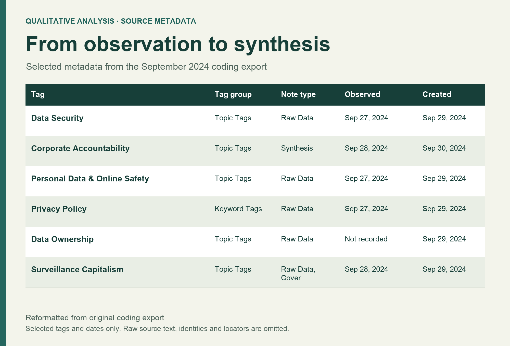
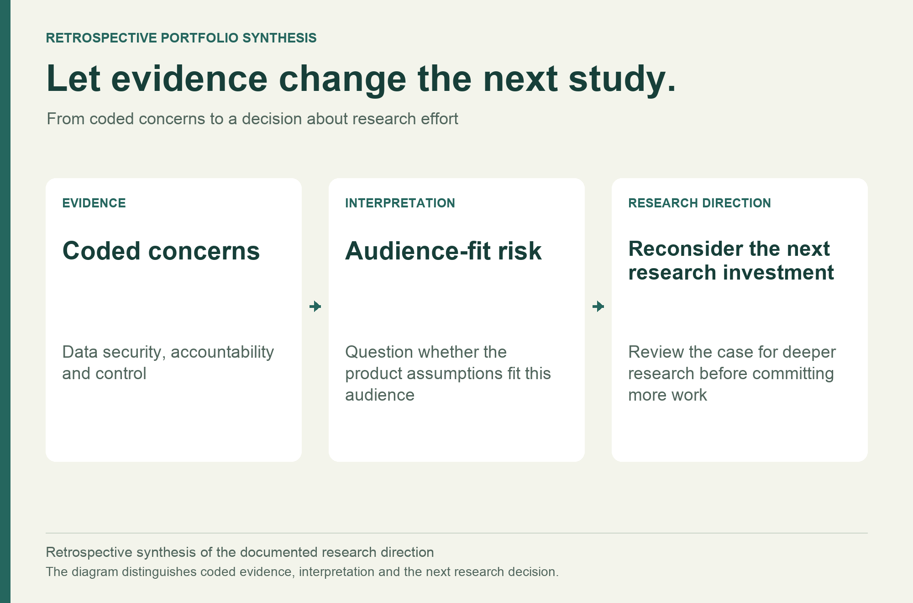

Oak AI / QUALITATIVE RESEARCH · AUDIENCE FIT
Test the audience assumption before going deeper.
Qualitative research in privacy-focused communities surfaced concerns about security, accountability, and control—and raised a harder question about audience fit.

THE PROBLEM
What needed to become clearer?
Oak was exploring an audience that cared about privacy and the use of personal data. The team needed to understand whether its product direction addressed those concerns in a way that would feel useful and credible.
MY CONTRIBUTION
Make the question answerable.
I examined community discussions and coded qualitative material in Dovetail. I used the patterns to question our audience assumptions and help decide whether deeper research in this direction was the best next investment.
DECISION 01
Begin with the concerns people were already discussing.
Community observation gave me a view of the language and concerns already present in privacy discussions. I organized excerpts with tags such as Data Security, Corporate Accountability, and Personal Data & Online Safety. The retained coding export provides a trace of that work; it is a partial record rather than a complete study count.

DECISION 02
Keep trust connected to something concrete.
The coded material brought attention to how data is protected, who is accountable, and how much control a person has. I used those themes to make the trust question more specific. A product’s promise needed to connect to the concerns people were expressing in the community.
DECISION 03
Use the uncertainty to reconsider the next study.
The findings raised concerns about the fit between the proposed experience and this audience’s priorities. I brought those concerns into the research discussion, supporting a reconsideration of deeper interviews and the next research investment. Community material was useful for identifying a risk; it could not establish product-market fit on its own.

OUTCOME & REFLECTION
A sharper question about whom to serve next.
The work produced coded qualitative material and an audience synthesis that supported reconsidering the next research investment. It helped the team challenge an early assumption before committing to a deeper study in the same direction.
Research can be useful when it changes the next question. Here, the important contribution was making an audience-fit risk clear enough to discuss.
The next question I would test
I would compare the emerging needs with another plausible audience, using a consistent interview guide and explicit recruitment criteria. I would look for concrete tasks and current workarounds before testing the product proposition.
September 2024 qualitative coding export and reviewed project retrospective. The retained source is partial and includes a privacy-community sample; no population prevalence or definitive product-market-fit conclusion is claimed. Visuals reformat source metadata and paraphrase themes; they do not reproduce participant quotations.